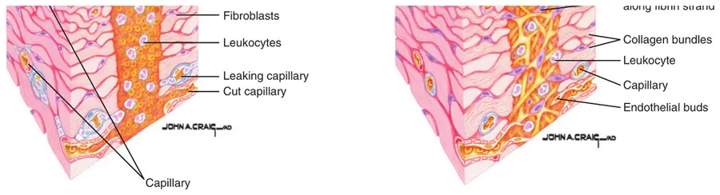
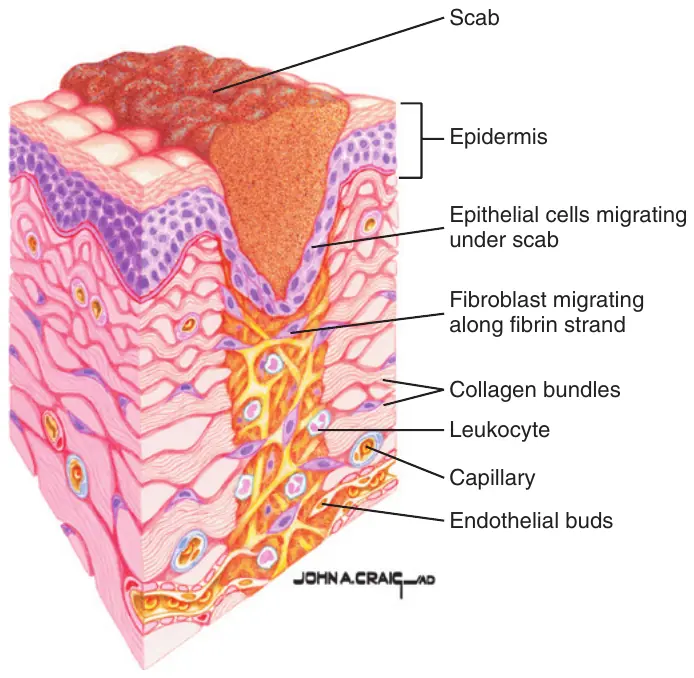

نسخه استخراجشده؛ ترجمه یا تأیید علمی انجام نشده است. وضعیت: captured
نخست اپیتلیالیزاسیون — و مفهوم مهار تماسی: اپیتلیوم آسیبدیده توانایی بازسازی ژنتیکی برنامهریزیشدهای دارد که به آن اجازه میدهد یکپارچگیاش را از راه تکثیر، مهاجرت، و فرایندی بهنام مهار تماسی (contact inhibition) دوباره برقرار کند.

و قاعدهاش: بهطور کلی، هر لبهی اپیتلیوم طبیعی آغاز به مهاجرت میکند و ادامه میدهد — با تکثیر سلولهای اپیتلیال زایا که لبهی آزاد را به جلو میرانند — تا وقتی با لبهی آزاد دیگری از اپیتلیوم تماس پیدا کند، جایی که به آن علامت داده میشود رشد جانبی را متوقف کند.
و یک نکتهی ظریف: توجه کن که آن اپیتلیوم دیگر میتواند نوع متفاوتی از اپیتلیوم باشد.
و سازوکارش هنوز قطعی نیست: نظریه این است که واسطههای شیمیایی رهاشده از سلولهای اپیتلیالی که تماس پیرامونیشان را با سلولهای اپیتلیال دیگر از دست دادهاند، این فرایند را تنظیم میکنند؛ ولی هنوز شاهد قطعی برای آن در دسترس نیست.
و حالا سه مرحلهی ترمیم زخم:
۱ — مرحلهی التهابی: از همان لحظهی آسیب بافتی آغاز میشود و در نبود عواملی که التهاب را طولانی کنند، ۳ تا ۵ روز میپاید. و دو فاز دارد: عروقی و سلولی.
و زنجیرهی رویدادهای عروقی:
و نشانههای کاردینال التهاب — با ریشهی تاریخیشان: قرمزی (اریتم) و تورم (ادم)، همراه با گرما و درد — rubor et tumor cum calore et dolore بهگفتهی سلسوس — و از دست رفتن عملکرد، functio laesa بهگفتهی ویرشو.
۲ — مرحلهی فیبروپلاستیک: رشتههای فیبرین که از انعقاد خون میآیند، زخم را بهصورت متقاطع میپوشانند و شبکهای میسازند که فیبروبلاستها روی آن مادهی زمینهای و تروپوکلاژن میگذارند.
و وضعیت بالینی زخم در پایان مرحلهی فیبروپلاستیک — سه ویژگی:
۳ — مرحلهی بازسازی (remodeling): مرحلهی پایانی ترمیم زخم، که بهطور نامحدود ادامه مییابد.
چهار عاملی که ترمیم زخم را مختل میکنند: مادهی خارجی، بافت نکروتیک، ایسکمی، و کشش.

ایسکمی — و علل متعددش: کاهش خونرسانی به زخم، ترمیم را به چند راه مختل میکند: میتواند به نکروز بیشتر بافت بینجامد و رساندن آنتیبادی، گلبول سفید، و آنتیبیوتیک به زخم را کم کند — که شانس عفونت را بالا میبرد. و ایسکمی زخم، رساندن اکسیژن و مواد مغذی لازم برای ترمیم درست را کم میکند.
و علل ایسکمی: بخیههای سفت یا نادرستجاگذاریشده، فلپهای نادرستطراحیشده، فشار خارجی بیشازحد بر زخم، فشار داخلی بر زخم مانند هماتوم، افت فشار سیستمیک، بیماری عروق محیطی، و کمخونی.
کشش — و سه سناریوی شکست: کشش در اینجا یعنی هر چیزی که گرایش به دور نگه داشتن لبههای زخم دارد.
و ترمیم به نیت اولیه و ثانویه:
نیت اولیه: لبههای زخمی که در آن هیچ بافتی از دست نرفته، اساساً در همان موقعیت آناتومیکی که پیش از آسیب داشتند گذاشته و تثبیت میشوند و اجازهی ترمیم مییابند. و ترمیم زخم سپس با کمترین بافت اسکار رخ میدهد، چون بافتها آسیب را «ادراک» نمیکنند.
و از سر صداقت علمی: بهبیان دقیق، ترمیم به نیت اولیه تنها یک ایدهآل نظری است که رسیدن به آن بالینی ناممکن است؛ ولی این اصطلاح عموماً برای نامیدن زخمهایی به کار میرود که لبههایشان از نزدیک دوباره نزدیک شدهاند.
و سود این روش: مقدار اپیتلیالیزاسیون دوباره، رسوب کلاژن، انقباض، و بازسازی لازم برای ترمیم را کم میکند؛ پس ترمیم سریعتر، با خطر کمتر عفونت، و با اسکار کمتر رخ میدهد. و نمونههایش: پارگیها یا برشهای خوبترمیمشده، و شکستگیهای استخوانی خوبجااندازیشده.
نیت ثانویه: یعنی شکافی میان لبههای برش یا پارگی، یا میان انتهای استخوان یا عصب پس از ترمیم باقی میماند؛ یا یعنی از دست رفتن بافتی در زخم رخ داده که مانع نزدیک شدن لبهها میشود.
و پیامدش: این وضعیتها به مقدار زیادی مهاجرت اپیتلیال، رسوب کلاژن، انقباض، و بازسازی حین ترمیم نیاز دارند؛ ترمیم کندتر است.
و ترمیم ساکت کشیدن — که ساکتها به نیت ثانویه ترمیم مییابند:
و ساکت پس از کشیدن از چه ساخته شده؟ استخوان کورتیکال (همان لامینا دورای رادیوگرافیک) پوشیده با لیگامانهای پریودنتال پارهشده، با حاشیهای از اپیتلیوم دهانی (لثه) در بخش تاجی. و ساکت با خون پُر میشود که منعقد میگردد و ساکت را از محیط دهان جدا میکند.
هفتهی اول: مرحلهی التهابی رخ میدهد؛ گلبولهای سفید وارد ساکت میشوند تا باکتریهای آلودهکننده را بردارند و شکستن هر دبری مانند قطعات استخوانی باقیمانده را آغاز کنند. و فیبروپلازی هم در هفتهی اول با رشد فیبروبلاستها و مویرگها آغاز میگردد؛ و اپیتلیوم در طول دیوارهی ساکت به پایین مهاجرت میکند. و در پایان هفتهی اول، استئوکلاستها در طول استخوان ستیغی تجمع مییابند.
هفتهی دوم: با مقدار زیاد بافت گرانولاسیون که ساکت را پُر میکند مشخص میشود؛ رسوب استئوئید در طول استخوان آلوئولار پوشانندهی ساکت آغاز شده است. و در ساکتهای کوچکتر، اپیتلیوم ممکن است تا این زمان کامل شده باشد.
هفتههای سوم و چهارم: فرایندهای آغازشده در هفتهی دوم ادامه مییابند، با اپیتلیالیزاسیون بیشتر ساکتها که در این زمان کامل میشود. و استخوان کورتیکال از ستیغ و دیوارههای ساکت تحلیل میرود، و استخوان ترابکولار تازه در سراسر ساکت گذاشته میشود.
و دو عدد پایانی که باید بدانی:
و ترمیم استخوان — تفاوتش با بافت نرم: رویدادهای ترمیم طبیعی زخم بافت نرم (التهاب، فیبروپلازی، و بازسازی) در ترمیم استخوان آسیبدیده هم رخ میدهند؛ ولی برخلاف بافتهای نرم، استئوبلاستها و استئوکلاستها هم برای بازسازی و بازآرایی بافت استخوانیشده درگیر میشوند.
و سه منبع سلولهای استخوانساز: پریوست، اندوستئوم، و سلولهای مزانشیمی پرتوان گردشی. و استئوکلاستها که از سلولهای پیشساز مونوسیتی میآیند، کارشان تحلیل استخوان نکروتیک و استخوانی است که نیاز به بازسازی دارد.